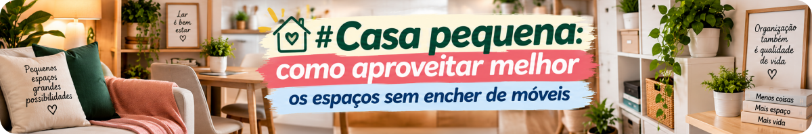
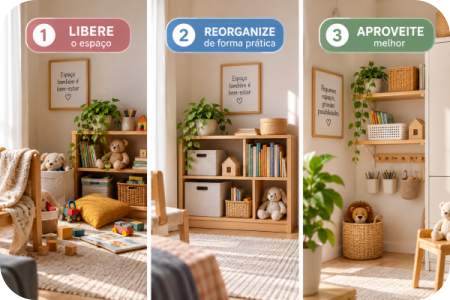
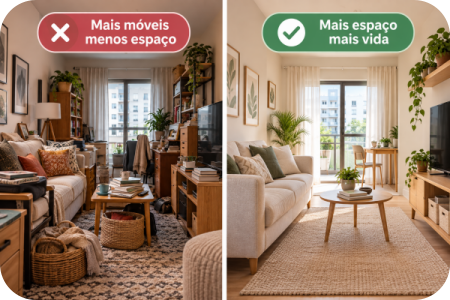
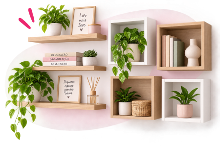
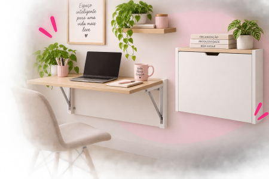
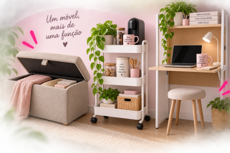

Casa pequena não precisa parecer apertada. Muitas vezes, o problema não está apenas nos metros quadrados. Está na quantidade de coisas, na disposição dos móveis e em espaços que poderiam ser usados de maneira melhor.
E existe uma armadilha bastante comum: falta espaço → compramos outro móvel → o móvel ocupa mais espaço → continuamos sem espaço. 😂
Por isso, antes de procurar uma estante, armário ou organizador novo, vale observar a casa de outro jeito.
1. Comece pelo caminho que você faz dentro da casa
Entre na sala e observe.
Você consegue passar sem desviar de móveis? As portas abrem normalmente? Há caixas, mesinhas, plantas ou objetos ocupando áreas de circulação?
Manter caminhos livres não é apenas uma questão visual. Orientações de prevenção de quedas do Ministério da Saúde recomendam manter a casa livre de obstáculos, como móveis mal posicionados e objetos espalhados.
Olhe primeiro para o espaço que você já tem.
Antes de perguntar “onde cabe mais um móvel?”, pergunte: “o que está atrapalhando o espaço que eu já tenho?”
2. Nem toda parede precisa de um móvel
Uma parede vazia não é necessariamente um problema esperando uma estante. 😂
Em ambientes pequenos, deixar algumas áreas livres pode facilitar a circulação e diminuir aquela sensação de que tudo está disputando espaço.
Olhe principalmente para os móveis pequenos:
Mesinhas • aparadores • banquinhos • estantes • gaveteiros • suportes.
Eles são realmente usados?
Se a resposta for não, talvez o melhor móvel para aquele lugar seja... nenhum.

3. Olhe para cima
Quando falta espaço no chão, vale observar as paredes.
Prateleiras e soluções verticais podem aproveitar áreas que normalmente ficam vazias.
Mas existe uma diferença importante entre aproveitar a altura e simplesmente transferir a bagunça para cima. 😂
Use as partes altas para aquilo que não precisa estar constantemente à mão e preserve o acesso fácil ao que faz parte da rotina.
Segurança vem primeiro. Objetos de uso frequente devem ficar em locais de acesso confortável, evitando improvisações como subir em cadeiras ou caixas para alcançar áreas muito altas.
4. Um móvel pode cumprir mais de uma função
Em espaço pequeno, móveis versáteis podem fazer sentido.
Um banco com espaço interno pode servir para sentar e guardar objetos. Uma cama com gavetas pode aproveitar uma área que normalmente ficaria sem uso. Uma mesa dobrável pode ser aberta quando necessária e liberar espaço depois.
Mas não compre algo multifuncional apenas porque parece genial na internet.
Primeiro descubra: eu realmente preciso das duas funções?
Se não precisa, você talvez esteja comprando duas soluções para um problema que nem existia.
Método Mundo LuFiNas
OBSERVE → LIBERE → REORGANIZE → MEÇA → SÓ DEPOIS COMPRE
5. Cantos esquecidos podem trabalhar melhor
Atrás de uma porta. Debaixo da cama. Acima de uma bancada. Uma lateral do armário. Um pequeno canto da lavanderia.
Esses lugares podem resolver necessidades específicas sem exigir outro móvel grande.
Mas atenção à nossa regra:
Espaço disponível não significa espaço que precisa ser preenchido.
Às vezes, o ganho está justamente em deixá-lo livre.
6. Cuidado com o “organizador que precisa ser organizado”
Essa merece entrar para o Mundo LuFiNas. 😂
Caixas, cestos, colmeias, prateleiras e organizadores podem ajudar bastante. Mas também ocupam espaço.
Antes de comprar, faça três perguntas:
O que vou guardar?
Onde ele ficará?
Quais são as medidas disponíveis?
Se não sabemos responder, ainda não sabemos se precisamos comprar.
7. Segurança também faz parte da organização
Uma casa bonita precisa continuar sendo uma casa segura.
Móveis mal posicionados, objetos espalhados e áreas de passagem obstruídas podem aumentar o risco de tropeços e quedas. Estantes e outros móveis também precisam estar estáveis e instalados de forma adequada.
Também não é boa ideia resolver a falta de espaço deixando fios e extensões atravessando áreas de passagem.
O Ministério de Minas e Energia alerta para riscos associados a fios danificados, sobrecarga de tomadas e adaptações improvisadas nas instalações elétricas, situações que podem contribuir para choques elétricos, curto-circuitos e incêndios.
Organizar não é colocar mais coisas na casa. É fazer a casa funcionar melhor.

Mais móveis ou mais espaço livre?
Preciso comprar alguma coisa?
Talvez.
Mas essa pergunta vem depois da reorganização.
Se você identificou um problema real — faltam prateleiras, existe espaço desperdiçado sob a cama ou os sapatos não têm lugar, por exemplo — aí sim vale pesquisar uma solução.
Escolhas da Lu
Qual problema você quer resolver? Veja opções e compare o que realmente combina com o seu espaço e a sua necessidade.

Prateleiras de parede / nichos Ver opções →
Mesas e escrivaninhas dobráveis Ver opções →
Móveis multifuncionais Ver opções →Publicidade | Link de afiliado — os produtos, preços e disponibilidade são definidos pelos vendedores e podem mudar. Compare medidas, características e opções antes de comprar.
Nem todo espaço vazio precisa ser preenchido.
Em uma casa pequena, ganhar espaço nem sempre significa encontrar onde colocar mais coisas. Às vezes significa decidir o que não precisa estar ali.
Para terminar...
Não existe móvel mágico que faça uma casa crescer.
Mas uma pequena mudança de posição, um caminho mais livre, o aproveitamento de uma parede ou simplesmente a retirada de algo desnecessário pode fazer o ambiente funcionar melhor.
Portanto, antes da próxima compra:
Olhe para a casa que você já tem.
Talvez exista espaço escondido nela.
Fontes consultadas
As orientações de segurança desta matéria foram verificadas em fontes oficiais do Governo Federal.
Ministério da Saúde — Saúde da Pessoa Idosa
Orientações atuais para prevenção de quedas, incluindo manter
a casa livre de obstáculos e móveis mal posicionados.
Consultar fonte
Biblioteca Virtual em Saúde — Ministério da Saúde
Orientações sobre circulação livre, disposição de móveis,
obstáculos, fios e segurança dentro de casa.
Consultar fonte
Ministério de Minas e Energia — Segurança elétrica em casa
Orientações sobre fios danificados, sobrecarga de tomadas,
improvisações e prevenção de acidentes elétricos domésticos.
Consultar fonte